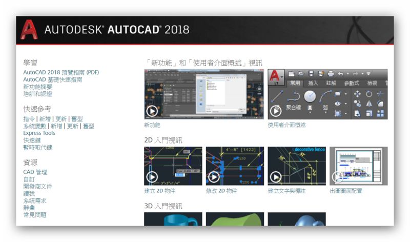
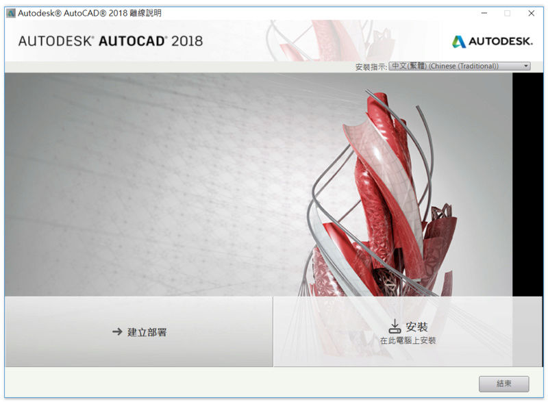
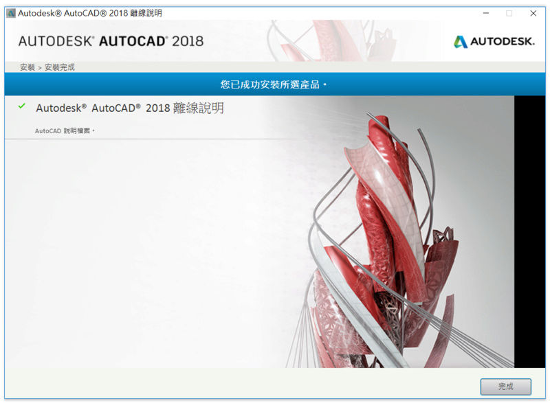

說明：在AutoCAD中預設開啟「F1說明」會使用線上版本，你必須連線網際網路。
AutoCAD 2018 線上說明（繁體中文）
http://help.autodesk.com/view/ACD/2018/CHT/
AutoCAD 2018 線上說明（英文）
http://help.autodesk.com/view/ACD/2018/ENU/
AutoCAD 2018 線上說明（簡體中文）
http://help.autodesk.com/view/ACD/2018/CHS/
AutoCAD 2018 LT版 線上說明（繁體中文）
http://help.autodesk.com/view/ACDLT/2018/CHT/
AutoCAD 2018 LT版 線上說明（英文）
http://help.autodesk.com/view/ACDLT/2018/ENU/
AutoCAD 2018 LT版 線上說明（簡體中文）
http://help.autodesk.com/view/ACDLT/2018/CHS/
說明：如果用戶沒有網際網路，可以下載離線說明版。




AutoCAD 2018 多國語言官方試用版下載
https://www.autocad-tw.com/t21007-topic
AutoCAD 2018 繁體中文版-安裝/啟用說明
https://www.autocad-tw.com/t21008-topic
AutoCAD 2018 help 線上說明